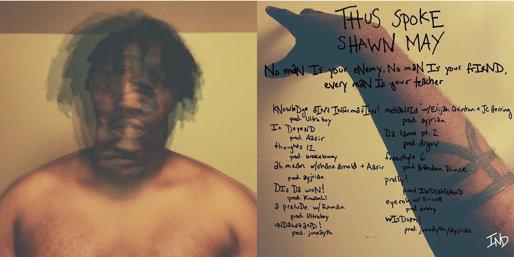

kNowleDge aIN’t INformatIoN!
Understand this ain’t weak hearted
Chants in the wind
Piecing mind to the sin
Inner grin from the souls back when
Mama beating devil kin
In the car like
Could this shit end
A path dug deep
Obsolete in the street
Had to tie my mindset to false promise for relief
Cuz the truth of my knowledge kept frontin on the peace
I done crept away from sense
Repenting slow again
Ain’t surprised that this flask ain’t in hand
Backyard toke in advance
Time to hang up the coat
I reckon that my virtue took blow
After blow, I was told
To lift the barren hope in my soul
That information couldn’t come close
Thus spoke nigga
It DepeND
My pride was faulted pride
Coincided chances
Sent my mama quick to the panic
Before she rest, I’ll payback all advantage
That I took
Had to wise thru the book
It's a shook feeling, truth from within
It depend
Walking down the street, life pass with a grin
Messy spite tryna win
On a path, sorry means to forsaken ends
Seen the ghost of my innocence
Triggering
Just a figment of my mind’s rage
Had to run intolerant of all the dismay
Seeking peace in the struggle, lack of better ways
Understanding all the plight forefather braved
From the roots of the original, my soul raised
Shit crazy
Reminiscing the attention that my mama paid me
Sloth energy
Lazy comeuppance on some bigotry
Ain't hindering me none
I brush away the stress, cuz this work had to be done
Many breaths haggard
Staggering
The faults I manifested, the result of no accident
Played Devil’s advocate, reckless of consequence
That conversation depended on my gratitude making sense
My hands was strung high
Looking down with pride lost
Albeit my mechanism to ease
Came little cost nigga
It be knowledge of self before I fall nigga
So I can seed erry piece of mine to my kids nigga
It depend
Why a nigga gotta suffer just to win?
Why the ignorant expectin’ me to flinch?
I ain’t seen shit since
It depend
thoughts 12
My mind faltered plenty when it came to trust
I could give a fuck if you could
My niggas got the pull that shock fear
I remember Steam doubt disappearing
Interference from the 1-2
Kick gravel as my worry spike to hurt proof
My father figured me a virtue
Passing my word
False curses through my moms pain
Change coming close, seeking pocket
No unfamiliar topic
Protecting soul
From my nana coming real bold
Hands rich with power
Praise rise as the sin cower
Aye
Never knocking as I climb tower
Inner peace from beyond
Time spinning in my palm, aye
Had to get this shit my way (x2)
Thus spoke
A wise mind seeking bliss from lost hope
No joke had me chuckle more than life tryna cope
We all know
ah meaN
Inimitable vices beyond pricing
Sighting progress
The logic couldn’t cope with Life’s handling of her process
Fondest memories told
Embolden blood as it found prose
Food for the soul
Papa Time wishing bad luck on us
Seek concern for stories told
Forefather
Carter 3
Back and forth with my belief
Still rooting for this damn release
Inner peace within the fucking conscious
Shawn Dada, IND stay in honor by my lonesome desire, nigga
Mastication of the demon from the kitchen
Couple tapes back
Had to contemplate a lot of raps
And its has been exactly that
Since Shawn/Mayor, revisited out now
Mama proud of her wise seed
Spreading peace through the trees
Cuz i speak to my nana
Her sun beating down on forsaken apologies
Bothering logic nigga
thus spoke a hiphop nigga
I mean
Kickback, we be vibing nig
I mean
We live wit it, I mean
We out hea, I mean
(shane arnold)
We don't stay alike
I'm supposed to herald to these niggas
On awareness, we not speaking par
and fairly niggas leakin
I could see the evil reaching
That’s the only lead
On sight and that's a shot in lightening
like the holy tree
I repeat and only fee-free
It's where I'm supposed to be
On top of niggas, bunkin
Trial and error don't bespoke
Who you approaching?
I was dumping on the cusp of
We just coming for the clutch
and you can't break when you on stage
They gas you up but it ain't love
we been sacred til these days
I mean,
He put metal in my face, I bit the shells
I mean, we on some shit
I took the county route
And lost touch, no love up in my granny house
I rallied and finaled now I'm fanning out, yeah
(Aasir)
Yeah now I’m fanning out
Outside yes I’m airing out, I’m clear of doubt
Up in my thoughts so many years I had to sterile out
The dearest cloud kept me from here & out
I’m here without
I tear but how? I thought I cleared it out
I guess emotion like the motion get to feel it out
You never truly let it go, you got to steer it out
Just turn the wheel & you might just cheer cause son it’s there it’s out
Your sunshine on the road, just feel the route
My mouth, my doubt, my mind my shackle
I’m my own drought
I’m my own demon
My own leech
My own reason (you know?) (2x)
Feel the season (yeah)
DIs Da wuN!
Ay if you got it, you got it
No need to doubt it, aye
We steady picking up slack, pushing for better days
This be the one for the soul, nigga we getting paid
This just a common trade
Eye for eye, ain’t gotta lie
The fuck could I say?
I prolly lost my grip with shit when time threw shade
Niggas waited long enough
Outta reach of excuses, my senses victim of my bluff
Condescending niggas flinching up a fuss Outta touch
Mental real slow, wonder why they wanna rush
I just knew the hurt coming from the jump
Disappointing assumption
On some spottie ottie bumping
Guess the talk was incumbent
Shoddy function all i see
Stigma fronting for something
Copping pleas for your soul
Now respect mean nothing
I shake my head because that luck just turn hightail running
I never pull no punches
My nig you Know how we coming
So sit back
Cuz if you got it, you got it
No need to doubt it, aye
We steady picking up slack, pushing for better days
This be the one for the soul, nigga we getting paid